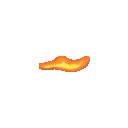
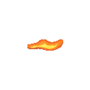

Экспериментальный cutout для оценки малого изгиба. Это не анимация всей плиты и не художественная приёмка.
Воспроизведение использует только существующие сырые PNG PixelLab в порядке 08 → 09 → 10 → 02 → 12 → 11 → 03 и обратно. Каждый показан 120 мс. Никаких новых промежуточных поз, перекраски или деформации нет.


Загрузка PNG…
Порядок и SHA: timeline.json. Сравнение поз: контакт. Самый заметный шаг 02 → 12. Метрики соседних переходов: отчёт.